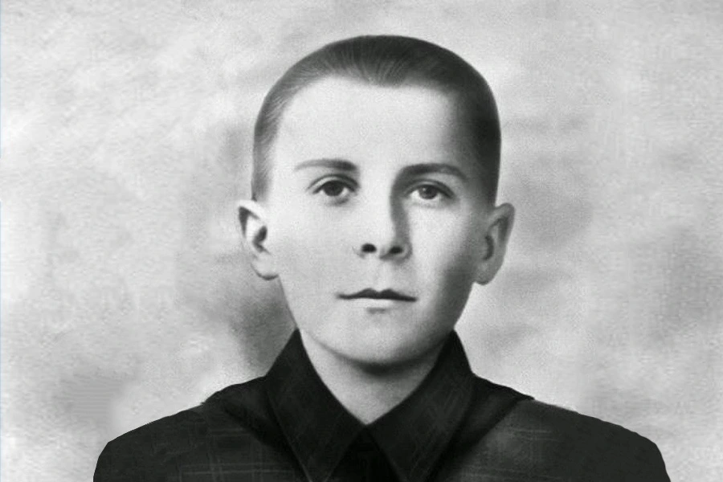

🎖️ Марат Казей
1929–1944 · Юный партизан-разведчик · Герой Советского Союза

Марат Иванович Казей — юный партизан-разведчик, погибший в 14 лет, подорвав себя гранатой вместе с врагами. Герой Советского Союза (посмертно, 1965).
📌 Основные факты
| Марат Иванович Казей | |
|---|---|
| Рождение | 10 октября 1929, деревня Станьково, Минская область |
| Смерть | 11 мая 1944, деревня Хоромицкие (14 лет) |
| Отряд | Партизанский отряд им. 25-летия Октября, разведчик штаба 200-й бригады им. Рокоссовского |
| Звание | Герой Советского Союза (посмертно, 1965) |
| Награды | Орден Ленина, Орден Отечественной войны I степени, медали «За отвагу» и «За боевые заслуги» |
📜 Семья и начало войны
Марат родился 10 октября 1929 года в деревне Станьково (Дзержинский район, Минская область). Его родители были убеждёнными коммунистами. Отец, Иван Георгиевич, служил на Балтийском флоте, работал на машинно-тракторной станции. В 1935 году был репрессирован и сослан на Дальний Восток (реабилитирован посмертно в 1959 году).
Мать, Анна Александровна, осталась с двумя детьми — Маратом и старшей сестрой Ариадной. Когда началась война, она прятала и лечила раненых партизан у себя дома. Нашлись предатели, которые донесли об этом фашистам. В ноябре 1942 года Анну Александровну повесили в Минске.
После смерти матери Марат вместе с сестрой ушли в партизанский отряд имени 25-летия Октября. Он стал разведчиком.
🎖️ Боевой путь
Юный партизан много раз проникал в немецкие гарнизоны и возвращался с ценной информацией, участвовал в диверсиях и боях. В 1943 году, в 14 лет, совершил первый подвиг: когда фашисты окружили партизан у деревни Румок, именно Марат прорвался сквозь кольцо и привёл на помощь соседний отряд.
Зимой 1943 года сестра Ариадна получила сильное обморожение ног и была эвакуирована на самолёте в тыл. Марат отказался лететь с ней — он остался в отряде и стал разведчиком штаба 200-й партизанской бригады имени К. К. Рокоссовского.
За смелость и отвагу в боях Марат был награждён медалями «За отвагу» и «За боевые заслуги», орденом Отечественной войны I степени.
💔 Последний бой
11 мая 1944 года Марат и начальник разведки штаба Михаил Ларин прибыли в деревню Хоромицкие Узденского района для встречи со связным. После их приезда каратели окружили деревню. В перестрелке Ларин погиб почти сразу.
Марат смог добраться до опушки леса, где принял бой в одиночку. Он отстреливался до последнего патрона, а затем гранатой подорвал себя и подходивших к нему немцев.
— Из показаний одного из карателей на суде, 1965 год
🏅 Память
Звание Героя Советского Союза Марату Казею присвоено посмертно в 1965 году. Его имя внесено в Книгу почёта Всесоюзной пионерской организации. На месте гибели установлен памятник.